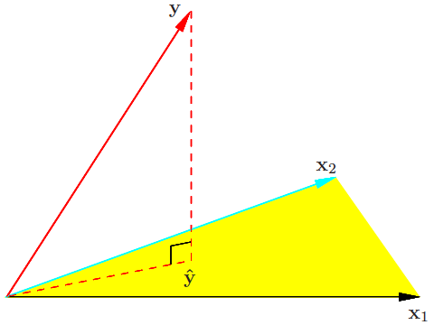
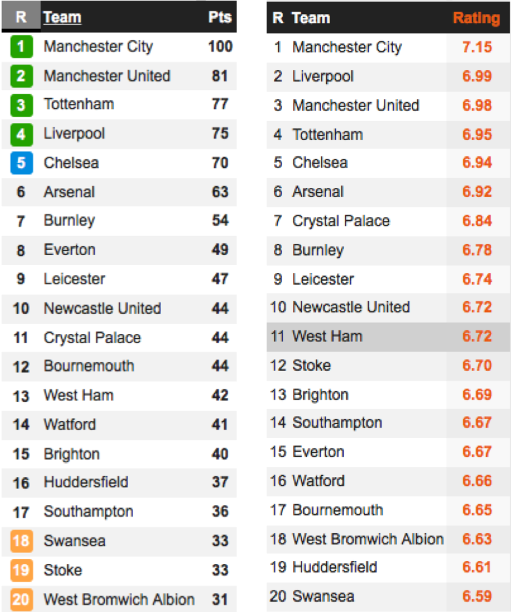
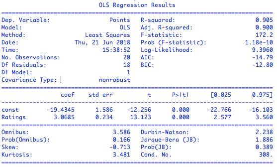
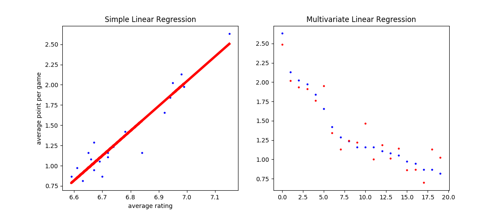
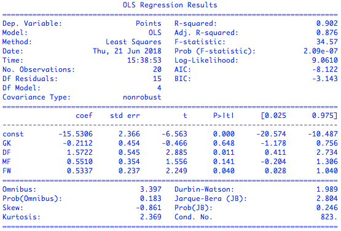
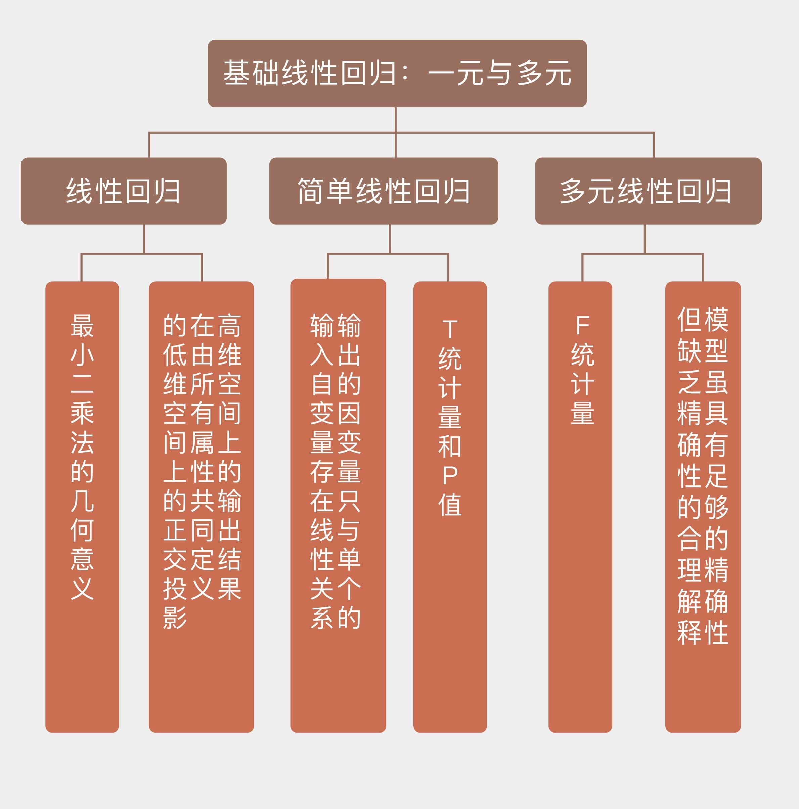

- 00 开篇词 打通修炼机器学习的任督二脉.md.html
- 01 频率视角下的机器学习.md.html
- 02 贝叶斯视角下的机器学习.md.html
- 03 学什么与怎么学.md.html
- 04 计算学习理论.md.html
- 05 模型的分类方式.md.html
- 06 模型的设计准则.md.html
- 07 模型的验证方法.md.html
- 08 模型的评估指标.md.html
- 09 实验设计.md.html
- 10 特征预处理.md.html
- 11 基础线性回归：一元与多元.md.html
- 12 正则化处理：收缩方法与边际化.md.html
- 13 线性降维：主成分的使用.md.html
- 14 非线性降维：流形学习.md.html
- 15 从回归到分类：联系函数与降维.md.html
- 16 建模非正态分布：广义线性模型.md.html
- 17 几何角度看分类：支持向量机.md.html
- 18 从全局到局部：核技巧.md.html
- 19 非参数化的局部模型：K近邻.md.html
- 20 基于距离的学习：聚类与度量学习.md.html
- 21 基函数扩展：属性的非线性化.md.html
- 22 自适应的基函数：神经网络.md.html
- 23 层次化的神经网络：深度学习.md.html
- 24 深度编解码：表示学习.md.html
- 25 基于特征的区域划分：树模型.md.html
- 26 集成化处理：Boosting与Bagging.md.html
- 27 万能模型：梯度提升与随机森林.md.html
- 28 最简单的概率图：朴素贝叶斯.md.html
- 29 有向图模型：贝叶斯网络.md.html
- 30 无向图模型：马尔可夫随机场.md.html
- 31 建模连续分布：高斯网络.md.html
- 32 从有限到无限：高斯过程.md.html
- 33 序列化建模：隐马尔可夫模型.md.html
- 34 连续序列化模型：线性动态系统.md.html
- 35 精确推断：变量消除及其拓展.md.html
- 36 确定近似推断：变分贝叶斯.md.html
- 37 随机近似推断：MCMC.md.html
- 38 完备数据下的参数学习：有向图与无向图.md.html
- 39 隐变量下的参数学习：EM方法与混合模型.md.html
- 40 结构学习：基于约束与基于评分.md.html
- 如何成为机器学习工程师？.md.html
- 总结课 机器学习的模型体系.md.html
- 总结课 贝叶斯学习的模型体系.md.html
- 结课 终有一天，你将为今天的付出骄傲.md.html
- 捐赠
11 基础线性回归：一元与多元
从今天开始，专栏将进入统计机器学习模块。虽然统计机器学习中千姿百态的模型让人眼花缭乱，但究其本原，它们都来源于最原始的线性回归（linear regression）。
在我看来，线性模型最大的优点不是便于计算，而是便于解释。它能以简洁明了的方式清晰体现出输入的变化如何导致输出的变化。正所谓“一生二，二生三，三生万物”，将不同的改进方式融入线性模型的基本思想中，就可以得到各种巧夺天工的复杂方法。
在第一季“人工智能基础课”专栏中，我介绍了线性回归的原理，证明了当噪声满足正态分布时，基于最小二乘法（least squares）的线性回归和最大似然估计是等价的。
《机器学习 | 简约而不简单：线性回归》
这次我们换个角度，来看看最小二乘法的几何意义。之前，线性回归的数学表达式被写成\(f({\\bf x}) = {\\bf w} ^ T {\\bf x} = \\sum_{i = 0}^{n} w_i \\cdot x_i\)。但在讨论几何意义时，这个表达式要被改写成
\[ f({\\bf x}) = 1 \\cdot \\beta_0 + \\sum\\limits_{j = 1}^n x_j \\cdot \\beta_j = {\\bf x} ^ T {\\boldsymbol \\beta}\]
可别小看这个简单的写法变化，从列向量\(\\bf x\)到行向量\({\\bf x} ^ T\)的改变就像矩阵的左乘和右乘一样具有不同的意义。
当输出被写成\({\\bf w} ^ T {\\bf x}\)时，其背后的寓意是每个包含若干输入属性和一个输出结果的样本都被视为一个整体，误差分散在不同的样本点上；而当输出被写成\({\\bf x} ^ T {\\boldsymbol \\beta}\)时，其背后的寓意是每个单独属性在所有样本点上的取值被视为一个整体，误差分散在每个不同的属性上。但横看成岭侧成峰，观察角度的变化不会给观察对象本身造成改变，数据本身是没有变化的。
假设数据集中共有\(N\)个样本，那么\({\\bf x} ^ T\)就变成了\(N \\times (n + 1)\)维的数据矩阵\({\\bf X}\)，它的每一行表示的都是同一个样本的不同属性，每一列则表示不同样本中的相同属性。如果待拟合数据的特性完美到任意两个属性都线性无关的话，\({\\bf X}\)就可以看成一个由它的所有列向量所张成的空间。
一般来说，属性的数目\(n\)会远远小于数据的数目\(N\)，因此\({\\bf X}\)张成的是\(N\)维空间之内的n维生成子空间，或者叫n维超平面。这个超平面的每一个维度都对应着数据集的一个列向量。理想条件下，输出\({\\bf y}\)作为属性的线性组合，也应该出现在由数据属性构成的超平面上。但受噪声的影响，真正的\({\\bf y}\)是超平面之外的一个点，这时就要退而求其次，在超平面上找到离\({\\bf y}\)最近的点作为最佳的近似。

最小二乘的几何意义（图片来自Elements of Statistical Learning，图3.2）
在上图中，黄色区域表示由所有属性张成的超平面；黑色向量\(x_1\)和天蓝色向量\(x_2\)表示输入属性；红色实线\(y\)表示真实输出，水平的红色虚线\(\\hat y\)表示数据的最优估计值（属性的线性组合）；垂直的红色虚线表示\(y\)与\(\\hat y\)的残差，它与超平面正交。
根据几何知识不难得出，要找的最佳近似\(\\hat {\\bf y}\)就是\({\\bf y}\)在超平面上的投影，而最佳近似所对应的系数\(\\hat {\\boldsymbol \\beta}\)就是线性回归的解，点\(\\hat {\\bf y} = {\\bf X}{\\boldsymbol \\beta}\)和\({\\bf y}\)之间的距离就是估计误差，也叫残差（residual），它就是最小二乘法最小化的对象，其表达式是\(|| {\\bf y} - {\\bf X}{\\boldsymbol \\beta}|| ^ 2\)。对参数\(\\boldsymbol \\beta\)求导不难得到，能够使均方误差最小化的参数\(\\hat {\\boldsymbol \\beta}\)应该满足
\[({\\bf y} - {\\bf X} \\hat {\\boldsymbol \\beta})^T {\\bf X} = 0\]
这个式子说明了最小二乘法的几何意义：计算高维空间上的输出结果在由所有属性共同定义的低维空间上的正交投影（orthogonal projection）。投影操作意味着残差不会在数据维度上遗留任何分量，这种基于误差和数据正交性的最优解也经常出现在信号处理当中。
在实际应用中，如何解释线性回归的结果呢？下面这个例子可以说明。
眼下世界杯正进行得如火如荼。如果爱好足球，你一定不会对数据网站WhoScored感到陌生，它的一大特色是会在每场比赛结束后根据球员表现给出评分，0分最低，10分最高。虽然这个评分系统能够直观体现谁踢得好谁踢得差，但关于其专业性的质疑却从未停止。那么WhoScored的评分到底准不准呢？我们不妨用线性回归做个测试。
如果WhoScored的评分足够合理，那球员的评分就应该和球队的成绩呈现出正相关，而线性又是正相关最直接的描述。为了验证球队赛季积分\(y\)和所有球员的赛季平均评分\(x\)之间是否存在线性关系，我从网站上复制了2017~18赛季英超联赛的相关数据，这个包含20个样本的小数据集就是训练集。在拟合数据时，我使用的第三方库是StatsModels，之所以选择这个库是因为它能够给出更多统计意义上的结论，这些结论对于理解线性回归模型大有裨益。

2017~18赛季英超联赛积分榜与评分榜（图片来自whoscored.com）
在模型拟合之前有必要对输入数据做一点处理，那就是将因变量从球队的赛季总积分转换成场均积分。在足球联赛中，一场比赛的胜/平/负分别对应3/1/0分，因此计算场均积分可以看成是某种意义上的归一化，使数据在[0, 3]这个一致的较小尺度上得到更加直观的比较。
在使用StatsModels拟合模型时，首先要用add_constant函数在每个输入数据的后面添加一个1，借此把常数项纳入模型之中；接下来就可以调用OLS，也就是普通最小二乘法（ordinary least squares）作为拟合对象，计算线性模型的参数；最后使用fit函数获取拟合结果。要查看拟合模型的统计特性，只需打印出模型的summary。下图就是对英超数据集的拟合结果。

英超数据集上的简单线性回归拟合结果
可以看到，模型拟合最核心的结果显示在第二排：coef表示的是参数的估计值，也就是通过最小二乘计算出的权重系数。拟合结果告诉我们，球队场均积分\(y\)和球员平均评分\(x\)之间的关系可以近似表示为回归式\(y = 3.0685x - 19.4345\)，这说明如果所有球员共同努力将平均评分拉高0.1的话，球队在每场比赛中就能平均多得0.306分。
右侧std err表示的是参数估计的标准误（standard error），虽然最小二乘得到的是无偏估计量，意味着估计结果中不存在系统误差，但每一个特定的估计值结果依然会在真实值的附近波动，标准误度量的就是估计值偏离真实值的平均程度。
最后两列[0.025 0.975]给出了95%置信区间：每个参数真实值落在这个区间内的可能性是95%。对于线性回归而言，置信下界和上界分别是估计值减去和加上二倍的标准误，也就是coef\(\\pm 2 \\times\)std err。
置信区间告诉我们，平均评分拉高0.1并不意味着球队每场一定能多得0.306分，但多得的分数基本在0.258到0.356之间。如果用2016-17赛季的数据作为训练数据的话，这个数据的计算结果就变成了0.33——也落在置信区间之内，这也验证的估计结果的波动性。
中间两列中的t和P>|t|都是统计学中的关键指标，它们评估的是拟合结果的统计学意义。t代表\(t\)统计量（\(t\)-statistic），表示了参数的估计值和原始假设值之间的偏离程度。在线性回归中通常会假设待拟合的参数值为0，此时的\(t\)统计量就等于估计值除以标准误。当数据中的噪声满足正态分布时，\(t\)统计量就满足\(t\)分布，其绝对值越大意味着参数等于0的可能性越小，拟合的结果也就越可信。
P>|t|表示的则是统计学中争议最大的指标——\(p\)值。\(p\)值（\(p\)-value）是在当原假设为真时，数据等于观测值或比观测值更为极端的概率。简单地说，\(p\)值表示的是数据与一个给定模型不匹配的程度，\(p\)值越小，说明数据和原假设的模型越不匹配，也就和计算出的模型越匹配。在这个例子里，原假设认为待估计的参数等于0，而接近于0的\(p\)值就意味着计算出的参数值得信任。
看完第二排再来看第一排，也就是对模型拟合数据的程度的评价，重要的指标在右侧一列。R-squared表示的是\(R ^ 2\)统计量，也叫作决定系数（coefficient of determination），这个取值在[0, 1]之间的数量表示的是输出的变化中能被输入的变化所解释的部分所占的比例。在这个例子里，\(R ^ 2 = 0.905\)意味着回归模型能够通过\(x\)的变化解释大约91%的\(y\)的变化，这表明回归模型具有良好的准确性，回归后依然不能解释的9%就来源于噪声。
\(R ^ 2\)统计量具有单调递增的特性，即使在模型中再添加一些和输出无关的属性，计算出来的\(R ^ 2\)也不会下降。Adj. R-squared就是校正版的\(R ^ 2\)统计量。当模型中增加的变量没有统计学意义时，多余的不相关属性会使校正决定系数下降。校正决定系数体现出的是正则化的思想，它在数值上小于未校正的\(R ^ 2\)统计量。

英超数据集上简单线性回归（左）和多元线性回归（右）的拟合结果
上图给出了英超数据集上简单线性回归和多元线性回归的拟合结果，其中蓝点为数据点，红点为预测点。在简单回归中，大部分数据点集中在拟合直线附近，一个明显的异常点是中游球队水晶宫（Crystal Palace）。
回到英超数据集的例子，图形结果和数值指标都表明线性回归能够较好地拟合两者之间的关系，这说明WhoScored的评分系统是值得信任的。但这个例子只是线性回归的一个特例，它特殊在输出的因变量只与单个的输入自变量存在线性关系，这种模型被称为简单线性回归（simple linear regression）。更一般的情况是因变量由多个自变量共同决定，对这些自变量同时建模就是多元线性回归（multivariate linear regression）。
与简单线性回归一样，多元线性回归中的参数也要用最小二乘法来估计。还是以积分和评分的关系为例，在简单线性回归中，自变量是所有球员在所有比赛中评分的均值，但是球场上不同位置的球员发挥的作用也不一样。为了进一步分析不同位置球员对球队表现的影响，就要将单个自变量替换成不同位置球员（门将/后卫/中场/前锋）在整个赛季中的平均评分，再使用多元回归进行拟合。
在这个实例中，多元回归的属性，也就是自变量被设置为每队每个位置上出场时间较多的球员的赛季平均评分的均值，所有选中球员的出场时间都在1000分钟以上。
利用OLS模型可以得到多元回归的结果，可如果对结果加以分析，就会发现一个有趣的现象：一方面，多元模型的校正决定系数是0.876，意味着所有位置评分共同解释了输出结果的大部分变化，这也可以从预测值与真实值的散点图上观察出来；可另一方面，只有后卫评分和前锋评分的\(p\)值低于0.05，似乎球队的战绩只取决于这两个位置的表现。

英超数据集上的多元线性回归拟合结果
看起来校正决定系数和\(p\)值给出了自相矛盾的解释，这时就需要观察另外一个重要的指标：\(F\)统计量。
\(F\)统计量（\(F\)-statistic）主要应用在多元回归中，它检验的原假设是所有待估计的参数都等于0，这意味着只要有一个参数不等于0，原假设就被推翻。\(F\)统计量越大意味着原假设成立的概率越低，理想的\(F\)值应该在百千量级。可在上面的多元回归中，\(F\)统计量仅为34.57，这就支持了\(p\)值的结论：估计出的参数的统计学意义并不明显。
英超数据集在统计上的非显著性可能源自过小的样本数导致的过拟合，也可能源自不同属性之间的共线性（collinearity）。可在更广泛的意义上，它揭示的却是多元线性回归无法回避的一个本质问题：模型虽然具有足够的精确性，却缺乏关于精确性的合理解释。
假定数据共有10个属性，如果只保留10个属性中的5个用于拟合的话，肯定会有不止一个5元属性组能够得到彼此接近的优良性能，可对不同5元组的解读方式却会大相径庭。这种现象，就是统计学家莱奥·布雷曼口中的“罗生门”（Rashomon）。
《罗生门》是日本导演黑泽明的作品，取材于日本作家芥川龙之介的小说《草莽中》。一名武士在竹林中被杀，不同当事人的供词既是不同程度上的事实，也是不同角度下的谎言。布雷曼用这个词来描述最优模型的多重性，以及由此造成的统计建模的艰难处境：当不同的多元线性模型性能相近，却公说公有理婆说婆有理时，到底应该如何选择？
将“罗生门”深挖一步，就是机器学习和统计学在认识论上的差异：统计学讲究的是“知其然，知其所以然”，它不仅要找出数据之间的关联性，还要挖出背后的因果性，给计算出的结果赋予令人信服的解释才是统计的核心。
相比之下，机器学习只看重结果，只要模型能够对未知数据做出精确的预测，那这个模型能不能讲得清楚根本不是事儿。四十年前那句名言说得好：不管白猫黑猫，抓住耗子就是好猫。这句话用在机器学习上再合适不过了。
今天我向你介绍了基于最小二乘法的线性回归模型的理解以及从统计学角度的阐释，其要点如下：
线性回归拟合的是高维空间上的输出结果在由所有属性共同定义的低维空间上的正交投影；
简单线性回归的统计意义可以用\(t\)统计量和\(p\)值等指标描述；
多元线性回归的统计意义可以用\(F\)统计量描述，但回归结果可能缺乏对模型的解释能力；
机器学习与统计学的区别在于机器学习重于预测，统计学则重于解释。
本篇中的例子只以2017~18赛季英超联赛的数据作为训练数据集。如果使用不同赛季的数据训练的话，你就会发现每次拟合出来的系数都不一样。这样的事实会让你如何看待估计出的系数的准确性呢？
欢迎发表你的观点。
注：本文中的数据及代码可在下面地址查看。 https://github.com/tywang89/mlin40

© 2019 - 2023 Liangliang Lee. Powered by gin and hexo-theme-book.